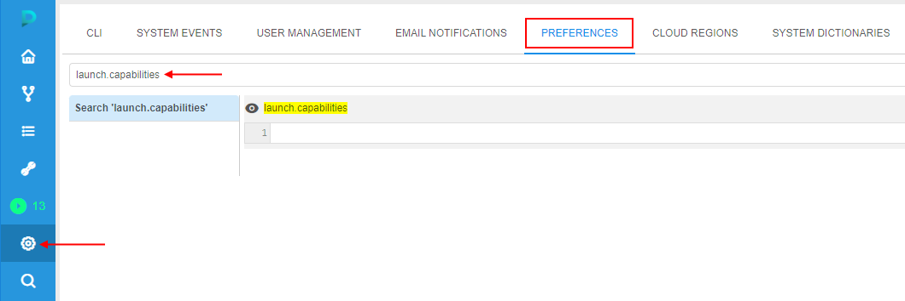
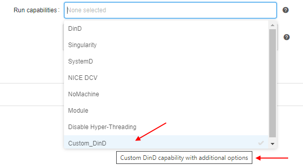

10.9. Run capabilities
Users always can launch tool runs with default settings (as they are configured in the tool/tool version's settings).
On the other hand, there are cases when for the run specific custom settings shall be specified.
In addition to the general frequently-used settings (like instance type and disk size), the platform allows you to customize special system behavior/capabilities.
Some of these capabilities can be configured via System parameters, but more convenient way - to use the GUI control "Run capabilities" and select necessary items from the list.
Ways to set such capabilities for a Tool run:
- at the Launch page in the "Exec environment" section, before the run, e.g.:
In such case, selected capabilities will be applied only for the upcoming run.
Note: for a run, several capabilities can be selected (multi-select for the dropdown list is supported) - at the Tool settings page, e.g.:
In such case, selected capabilities will be applied for all runs of that tool launched with default settings.
Note: several capabilities can be selected (multi-select for the dropdown list is supported) - at the Tool version's settings page, e.g.:
In such case, selected capabilities will be applied for all runs of that tool version launched with default settings.
Note: several capabilities can be selected (multi-select for the dropdown list is supported)
Same capabilities can be also configured for pipeline runs and detach configuration runs. In all cases the behavior is configured in the similar way - by the selecting of necessary items in the "Run capabilities" dropdown list before the run - in configuration or at the Launch page.
Below you can find descriptions and using examples of the separate capabilities.
Disable Hyper-Threading
Hyper-Threading technology makes a single physical processor appear as multiple logical processors. To do this, there is one copy of the architecture state for each logical processor, and the logical processors share a single set of physical execution resources.
Hyper-Threading technology is enabled by default for Cloud instances launched in Cloud Pipeline deployment.
But for some cases, users want to disable Hyper-Treading technology for specific runs as it may slow the computation.
So, this technology can be turned off via "Run capabilities", as is best for a particular application at the user's discretion.
Note: also the Hyper-Treading technology can be disabled manually by setting the parameter CP_DISABLE_HYPER_THREADING with true value before the run
In Cloud Provider environment, each vCPU is a thread of a physical processor core. All cores of the instance has two threads. Disabling of Hyper-Threading disables the set of vCPUs that are relied to the second thread, set of first thread vCPUs stays enabled.
For example, instance with enabled Hyper-Threading:
The same instance with disabled Hyper-Threading:
Example of disabling Hyper-Threading:
- Open any tool you wish to run with disabled Hyper-Threading.
- Select "Run" → "Custom settings".
- At the Launch page, expand the "Exec environment" section.
- Set the instance type with several CPUs (we will use the instance with 8 CPUs).
- Select the item "Disable Hyper-Threading" in the "Run capabilities" dropdown list:
- Launch the run.
- Open the Run logs page of the just-launched run, expand the "Parameters" section:
Check that the parameter to disable Hyper-Threading was set. - Wait until the SSH hyperlink appears. Click it.
- In the web-terminal perform the command
lscpu:
Here you can check that Hyper-Threading is disabled (only 1 thread per core is set) and virtual CPUs 4-7 are offline. So, only one thread is enabled (set of CPUs 0-3).
Custom capabilities
Except of the selection a predefined set of capabilities in the GUI for a job or a tool, Cloud Pipeline allows to create own non-complex scripts and use them via the Run capabilities menu.
Note: only admins can create and edit custom run capabilities. But use them for a job/tool run all users can.
Create/edit capability
Managing of the custom capabilities is being performed via the launch.capabilities system preference.
This preference contains an array of capability descriptions in JSON-format and has the following structure:
{
"<capability_name_1>": {
"description": "<Description of the capability>",
"commands": [
"<command_1>",
"<command_2>",
...
],
"params": {
"<parameter_1>": "<value_1>",
"<parameter_2>": "<value_2>",
...
},
"os": "all"
},
"<capability_name_2": {
...
},
...
}
Where:
<capability_name>- defines the capability name. This name will be displayed on the GUI, in the Run capabilities dropdown listdescription- defines the description of the capability. This description will be displayed on the GUI, when hovering the capability in the listcommands- block defines the array of theshellcommands that will be performed during the job launchparams- block defines the array of key-value pairs. Each of those pair will be set as a parameter for a jobos- parameter that defines for which docker image(s) the capability is allowed. Possible values:all- capability is allowed for all docker images without restrictions- list of comma-separated docker image names. Each item in the list can be specified in one of the following formats:
<docker_image_name>- capability is allowed for any version of the docker image.
Example:"os": "ubuntu"- capability with such parameter will be allowed only for theubuntuimages (for any version)<docker_image_name> <version_mask>- capability is allowed only for specific versions of a certain docker image. Versions are being defined by the mask, mask can include version name or its part, and*symbol for masking.
Examples:"os": "centos 7*, ubuntu 16.04"- capability with such parameter will be allowed only for allcentos 7versions (e.g.centos 7.0-1406andcentos 7.2-1511) and forubuntu 16.04as well.
- if
osis not specified at all (skipped) - capability is allowed for all docker images without restrictions (same behavior as"os": "all")
Usage of the custom capability
Let's create a custom capability that will set Docker-in-Docker mode for a job and perform a couple of simple commands.
- Open the System settings
- Navigate to the Preference tab
- Find
launch.capabilitiesparameter:
 - Add a new custom capability, e.g.:

Here, we added the Docker-in-Docker setup via the system parameterCP_CAP_DIND_CONTAINERand the performing a couple of simple commands that write an example text file.
After the capability specifying, click the Save button - Open any tool (for our example, the Ubuntu will be used)
- Click v button near the Run button, select the Custom settings item
- At the Launch page, expand the Exec environment section:

Click the Run capabilities dropdown list - Check that in the list, there is a custom item with the name specified at step 4:

- Hover over this item - in a tooltip, the description specified at step 4 will appear:
 - Select this item:

- Launch the run
- Open the just-launched run
- At the Run logs page, expand the Parameters section:
All parameters specified at step 4 are displayed.
Also, here you can see - each selected run capability is set as an environment variable in the format:CP_CAP_CUSTOM_{CAPABILITY_NAME}withtruevalue - Wait until all initialization tasks are done. Check that Docker-in-Docker was setup:

- Check in the Console that capability commands specified at step 4 were also performed:
- Click the SSH hyperlink. In the web-terminal, check the result of the commands performing: